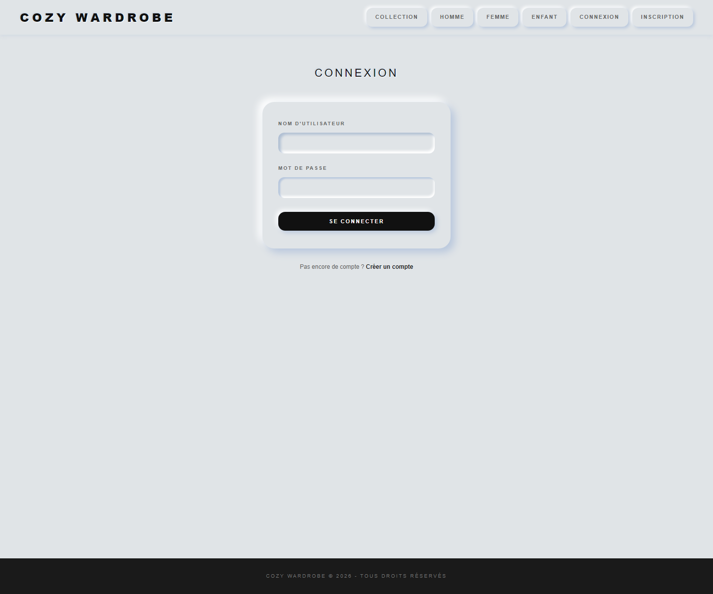
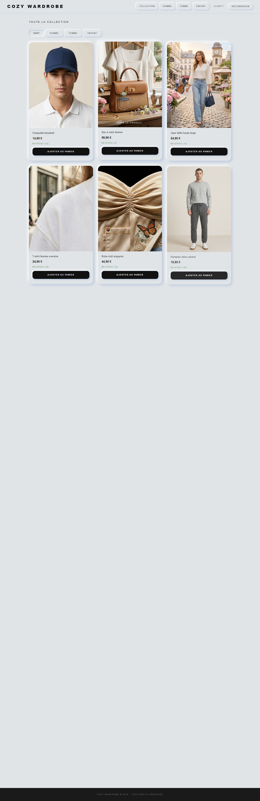
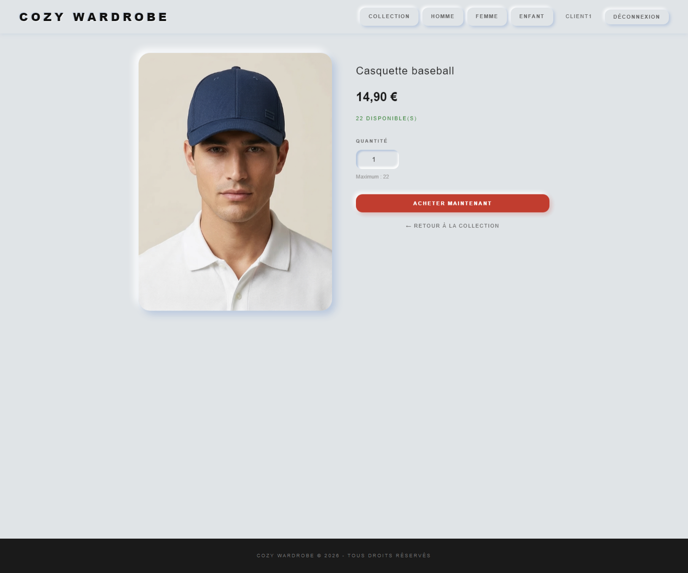
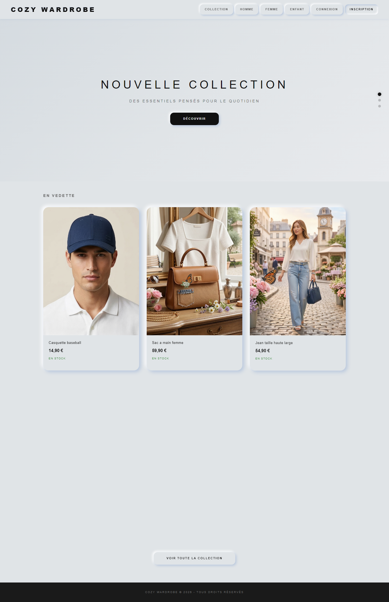
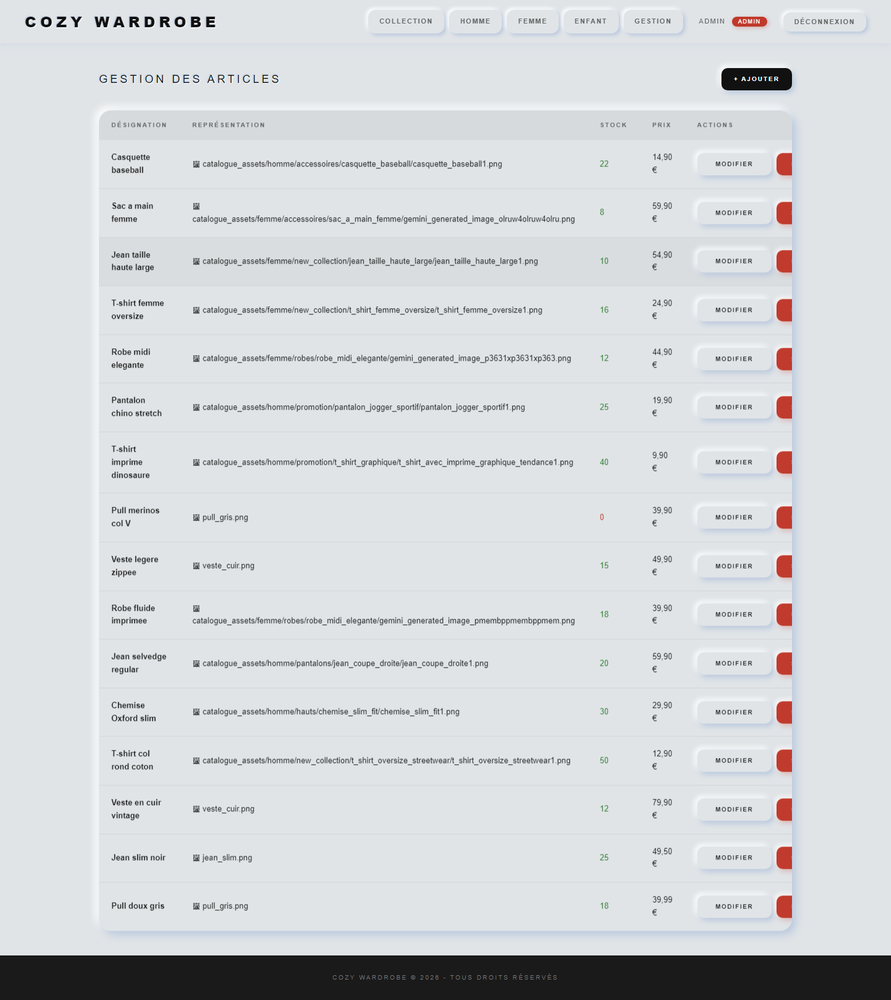

Projet : Boutique en ligne de vêtements avec Django et SQLite
1. Objectif du projet
Le but du projet est de développer un site de vente en ligne avec Django. Le site distingue
deux types d’utilisateurs : les administrateurs et les clients.
2. Fonctionnalités réalisées
Catalogue des articles avec nom, représentation, stock, prix et catégories.
Connexion et inscription des clients.
Achat d’une quantité donnée avec mise à jour automatique du stock.
Gestion administrateur : ajout, modification et suppression des articles.
Affichage d’images statiques pour les produits quand une image est disponible.
3. Répartition du travail
Membre
Contribution principale
Zeinabou
Initialisation du projet Django, configuration générale, intégration finale des contributions et vérifications.
Assia
Modèle Article, base de données, catégories, administration et structure des données.
Awa
Logique d’achat, contrôle du stock, formulaires et vues backend.
Alexis
Templates HTML, CSS, JavaScript, interface de navigation et rendu visuel.
Chloé
Données de démonstration, images produits, tests et préparation du rapport.
4. Captures d’écran

Page de connexion client.

Catalogue principal avec les articles, images, prix et stock.

Page d’achat avec choix de la quantité.

Vérification que le stock diminue après l’achat.

Interface de gestion administrateur pour ajouter, modifier ou supprimer un article.
5. Données techniques
Framework : Django
Base de données : SQLite
Langages : Python, HTML, CSS, JavaScript
Comptes de démonstration : admin / admin123 et client1 / client123
6. Conclusion
Ce projet nous a permis de mettre en pratique la création d’une application web complète avec Django,
la gestion des utilisateurs, la manipulation d’une base de données SQL et la construction d’une interface
utilisateur orientée e-commerce.
Astuce : ouvrez ce fichier dans un navigateur puis utilisez “Imprimer > Enregistrer en PDF”
pour produire rapidement le document demandé.